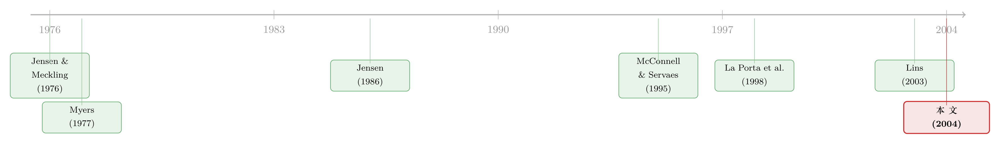

借来的「紧箍咒」：当老板的控制权远超他的钱包
本文读的是 Harvey, Lins & Roper (2004, Journal of Financial Economics)：在新兴市场，金字塔式持股让管理层用一份现金流权撬动两份控制权，代理成本被资本化进了公司价值里；而债务——尤其是国际银团贷款——能不能把这部分被「吃掉」的价值还给小股东？答案是：能，但只对那些「钱多、又没什么好项目可投」、最可能过度投资的公司有效，而且真正起作用的是后续借入、带契约监督的国际银团定期贷款，不是初次发行、也不是公开债。
1 引言：一个把控制权和钱包分开的人
先想象这样一个老板。
他名义上是上市公司的「实际控制人」，开会拍板、任命高管、决定一家公司往哪儿走，一切由他说了算。但如果你去翻他真正掏出来的钱——他个人和家族在这家公司里到底持有多少现金流权益——你会发现一个尴尬的数字：远远不到他手里那把「控制权」所对应的比例。
这不是道德故事，而是新兴市场里一种极其普遍的制度安排：金字塔式持股 (pyramid ownership structure)。我通过 B 公司控制 A 公司，再通过 A 公司控制目标公司，层层嵌套之后，我只需在最顶端放一点点钱，就能把底层公司的投票权牢牢攥在手里。Harvey、Lins 和 Roper 给这个「错配」起了个很形象的名字——现金流权杠杆 (cash flow rights leverage, CFRL)，定义就是管理层的控制权除以其现金流权。
在他们的样本里，这个数字的均值是 2.13。也就是说，新兴市场上一个典型的管理层，能把一份现金流权撬成两份多的控制权。
注意这个「杠杆」和我们平时说的财务杠杆完全是两码事。财务杠杆是债占资产的比例；现金流权杠杆衡量的是控制与所有权的分离程度，是公司治理意义上的「错配」。这篇文章最巧妙的地方，恰恰是把这两个看似无关的「杠杆」放进同一个故事里。
一个控制权远超钱包的老板，会做什么？标准的代理理论 (agency theory) 告诉我们：他会过度投资、会把公司的现金往自己口袋里搬、会修一座用不着的总部大楼——因为这些「私利」的成本由所有股东分摊，他只承担其中很小的一份现金流比例（关于这套逻辑的源头，可参见《债务这副药，为什么不能全吃？——重读 Jensen 和 Meckling 五十年》）。投资者不傻，他们看得见这种错配，于是用脚投票，把这类公司的估值打个折。
这就是本文的张力所在：这部分被「打折」掉的价值，能不能被救回来？
2 一个自然的猜想：让债来当「紧箍咒」
接着，一个自然的问题是：什么东西能管住这样一个老板？
Jensen (1986) 早就给过一个答案——债。自由现金流是万恶之源，而债务的本金和利息是硬约束，到期就得还，还不上就破产。所以让公司背上债，等于强行把现金从老板手里「掏」出去还给债权人，留给他挥霍的空间就小了（这正是《现金为什么一定要「还」出去？——四十年后，重读 Jensen 的自由现金流》里反复讲透的那个机制）。
但凡事都有另一面。Myers (1977) 提醒我们：如果一家公司有好项目可投，沉重的还债义务反而会逼着它放弃一些净现值为正的投资，造成投资不足 (underinvestment)。
于是债的作用是双刃的：
- 对于「钱多、好项目少」（高 在手资产 (assets in place)、低成长机会）的公司，债是良药——它堵住了过度投资的暗路；
- 对于「机会多、正缺钱」的成长型公司，债是毒药——它会卡住本该做的投资。
这就解释了本文为什么要反复强调一件事：衡量债务，必须相对于公司的在手资产来看。 一个有大量在手资产、却没什么成长前景的老板，是最危险的——他手里既有现金可挥霍，又没有正经地方去花。债对这种公司的纪律价值，理应最高。
把这两条线索拧在一起，本文要检验的核心命题就清楚了：
债务能不能专门为那些「现金流权杠杆高、且在手资产多」的公司创造价值？
3 识别策略：一个三方互相「咬尾巴」的系统
然后，真正棘手的一步出现了。
价值、杠杆、所有权结构这三者，是同时被决定的。老板的持股结构会影响他借多少债，债的多少会影响公司估值，而估值高低又反过来影响老板愿不愿意持股、愿不愿意举债。你不能简单地把 Tobin's Q 对债务比例做个回归就宣称「债创造了价值」——因为很可能是高价值的公司本来就更敢借债，因果方向是反的。
本文的处理办法是上一套 三阶段最小二乘 (three-stage least squares, 3SLS) 联立方程组：
- 价值方程（结构方程）：被解释变量是 Tobin's Q；
- 杠杆方程：被解释变量是债务/资产比；
- 所有权方程：被解释变量是现金流权杠杆。
三个内生变量互为自变量，再各配一组外生控制。比起以往只处理「价值—所有权」两者内生性的文献，这里多迈了一步，把债务也内生化了进来。
识别这套系统，核心是价值方程里那个交互项。把它写成一个忠实于论文设定的结构式：
$$ Q_i = \alpha + \beta_1\, CFRL_i + \beta_2\, D_i + \beta_3\,(CFRL_i \times D_i) + \gamma' X_i + \varepsilon_i $$
这里 \(CFRL_i\) 是现金流权杠杆，\(D_i\) 是债务/资产比，\(X_i\) 是公司规模、资本支出/资产、国家与行业虚拟变量等控制项。三个系数的符号，就是整篇文章的「测谎仪」：
- 如果代理成本被资本化进价格，那么 \(\beta_1 < 0\)——控制与所有权分离得越厉害，公司越不值钱；
- 如果债真的能缓解代理问题，那么交互项 \(\beta_3 > 0\)——债务越多，分离带来的折价就越能被抵消。
这是一个很干净的设计：它把「债是否创造价值」这个笼统的问题，转化成了一个条件性的问题——债的价值，取决于一家公司代理冲突有多严重。
4 数据：18 个新兴市场，三套互相嵌套的样本
本文的数据拼图分三块：
- 横截面样本：
1,014家来自 18 个新兴市场（阿根廷、巴西、智利、中国香港、印尼、马来西亚、韩国、泰国、土耳其……）的非金融上市公司，所有权数据取自 Lins (2003) 的 1995–1996 年终极所有权，股票收益来自 Datastream。 - 发债样本：
547家公司，1980–1997 年间在国内、外国、国际债券市场（用 SDC 的 Global New Issue 库）以及国际银团贷款市场（用 Capital Data 的 Loanware 库）的发债记录。 - 所有权发债样本：同时具备发债记录与所有权结构的
252家公司——很多关键检验靠的是这块「交集」。
几个值得记住的描述统计：横截面样本债务/资产比均值 0.28，和 Rajan & Zingales (1995) 给出的发达国家数字大体相当；短期债占总债的比例高达 0.60，印证了新兴市场公司更依赖短债的特征；现金流权杠杆均值 2.13，中位数 1.00（即一半公司根本没有分离）。作者还做了一件诚实的功课：他们把每年从资产负债表上看到的债务存量，和自己样本里采集到的债务流量对了一遍，确认后者平均占到前者的 33%（区间 12%–55%），以此说明发债样本不是边角料。
5 主要结果：债确实能救，但救得有条件
先看横截面的 3SLS 结果。
在价值方程里，现金流权杠杆的无条件系数是 −0.484（5% 显著）。这坐实了第一步猜想：控制与所有权分离得越厉害，公司越不值钱——代理成本是被实打实地定价进去的。这个数字还隐含一个朴素的政策含义：一个老板若肯卖掉间接持股、改成直接持股，把控制权和现金流权对齐，公司价值本身就会回升。
更关键的是那个交互项：\(CFRL \times\) 债务/资产 的系数是 1.132（5% 显著），符号为正。债确实在缓解代理问题。
但故事在这里出现了第一个反转。债务的无条件系数是 −3.765（5% 显著），是负的，而且数值上压倒了交互项的正效应。作者老老实实地算了一笔账：对一个现金流权杠杆为均值 2.13、Tobin's Q 为均值 1.48 的公司，把杠杆从 25 分位（0.12）提到 75 分位（0.42），
- 交互项带来的正效应：\(1.132 \times 2.13 \times (0.42-0.12) = 0.723\)；
- 无条件债务的负效应：\(-3.765 \times (0.42-0.12) = -1.130\)；
- 两者相加，净效应是 Tobin's Q 下降
0.407，除以 1.48，相当于 28% 的估值折损。
换句话说：对一个「平均」的公司而言，多借债反而是减分的。 债不是普惠的良药。它只有在代理冲突足够严重、且公司确实有「过度投资」之虞时，正效应才能盖过财务风险与投资不足带来的负效应。作者据此把样本切成子样本——按在手资产高低、成长机会多少分组——结果正如预期：债的增量收益集中在「高在手资产 / 低成长机会」的那一组，也就是最可能过度投资的那批公司。
这正是本文标题里「expected agency costs are extreme」的含义：不是所有公司都适合用债当紧箍咒，只有当代理成本被推到极端时，债的治理价值才真正显形。这也是它和 McConnell & Servaes (1995) 的关键分野——后者发现债与价值的关系取决于投资机会集，而本文坚持认为，代理问题的病根在控制权与所有权的分离本身，而非投资机会。
6 第二个反转：不是「债」在救，是「哪一种债」在救
到这里，横截面只告诉了我们「债平均地、条件性地有用」。但真正精彩的一刀，落在事件研究 (event study) 上。
如果债的价值来自监督与契约约束，那么不同市场、不同类型的债，效果就该天差地别。本文于是把发债拆开来看，比较不同市场上发债公告的累计异常收益 (cumulative abnormal return, CAR)：
- 国际银团定期贷款 (internationally syndicated term loans)：CAR 显著为正。这类贷款带着契约条款和持续监督，等于给老板的经营行为套上了隐形的紧箍咒。
- 而且，正的异常收益主要出现在后续发行、而不是初次发行上——这点很关键：第一次借，市场还在观望；当一家公司反复回到这个被严格监督的市场，等于一次次地向外界「续签」了愿意被监督的承诺。
- 更妙的是，这些贷款的异常收益，与管理层控制权和所有权的分离程度正相关，也与在手资产的多少正相关——和横截面的故事严丝合缝。
- 作为对照，国际公开债（扬基债、欧洲债）的初次发行也带来显著正的 CAR，但这些收益与所有权结构无关。
这就把本文的中心论点钉死了：创造价值的不是「债」这个笼统的标签，而是被积极监督的、带契约约束的私募债。它的价值，恰恰来自它对那些控制权严重错配、又坐拥大量在手资产的老板，构成了一种可信的约束。作者把这称为 再签约假说 (recontracting hypothesis)：股权持有人之所以欢迎这类债，是因为它逼着管理层去遵守受监督的契约，尤其是在公司本来最可能过度投资的时候。
（顺带一提，「借公开债往往是为了躲开银行那种紧密监督」这个相反方向的动机，在《借公开债，是为了躲开银行的眼睛》里有更细的讨论——两篇放在一起读，正好是一枚硬币的两面。）
7 文献脉络
把这篇文章放回它所在的那条河流里看，会更清楚它的位置。
源头是 Jensen & Meckling (1976)——代理成本与所有权结构的奠基之作，把「控制与所有权的分离会损害价值」写成了公司金融的第一性原理。接着 Myers (1977) 给出了债的另一面：成长机会会让债变成投资不足的祸根。再到 Jensen (1986) 的自由现金流假说，债被正式抬上「治理工具」的位置——本金利息的硬约束，是约束自利经理的一根缰绳。
然后，一条平行的支流汇了进来：La Porta 等人 (1998) 的「法与金融」把视野推向国别制度，揭示了新兴市场普遍存在的弱投资者保护；Lins (2003) 则把「现金流权杠杆」这一精确度量带进了新兴市场的实证。
而在「债与价值」的直接对话上，最接近本文的是 McConnell & Servaes (1995)——他们发现，在美国公司里，账面杠杆与价值的关系取决于投资机会集。

本文站在这几条支流的交汇处，做了一件别人没做的事：它同时握住了「代理成本的极端变异（金字塔持股）」和「债务合约类型的丰富变异（国内/国际、公募/私募）」这两把尺子，并用 3SLS + 事件研究双管齐下，直接检验「债能否化解所有权错配带来的折价」。换句话说，它把 Jensen 的自由现金流假说，搬到了一个代理成本被放大到极端的天然实验室里去验。
8 评论与延伸（Q&A + 研究方向）
(a) 几个可能的疑问
Q：现金流权杠杆和我们平时说的财务杠杆，到底差在哪？
完全不同。财务杠杆是「债 ÷ 资产」，衡量资本结构。现金流权杠杆是「控制权 ÷ 现金流权」，衡量治理意义上的错配——老板用多少钱撬动了多少话语权。本文的精妙之处正在于让这两个「杠杆」在同一个交互项里相遇：用财务杠杆去对冲治理杠杆带来的折价。
Q：3SLS 真的解决了内生性吗，还是只是换了个形式？
它比单方程 OLS 前进了一步，把价值、杠杆、所有权三者都内生化了。但任何工具变量方法的软肋都一样：你必须找到一些「只影响其中一个、不影响另两个」的外生变量。本文用 Rajan-Zingales 的杠杆决定因素、以及 Demsetz-Lehn 式的股票 beta 和波动率作为所有权方程的工具——这些排他性约束是否成立，是可以被合理质疑的。作者自己也补了 OLS 和 2SLS 做稳健性，但识别的可信度终究依赖这些工具的外生性假设。
Q：「债平均是减分的」这个结果，会不会本身就说明债没用？
恰恰相反，这是本文最诚实也最有说服力的地方。如果债对谁都好，那才可疑。债的负的无条件系数，反映的是财务风险和投资不足的真实成本；只有在「高代理成本 + 高在手资产」的子样本里，正的交互效应才盖过它。这种异质性本身，就是债在「对症」地起作用的证据。
Q：为什么是后续发行、而不是初次发行带来正收益？
这正是再签约假说的核心。初次进入一个被严格监督的市场，市场尚不确定老板是否会真的守约；而反复回到这个市场，意味着管理层一次次地把自己重新绑上监督的桅杆——每一次续借，都是一次可信的承诺更新。市场为这种「持续被监督」的承诺付费，而不是为一次性的发债行为付费。
Q：会不会是「好公司才借得到国际银团贷款」的选择效应？
这是最值得担心的反向因果。能进国际银团市场的公司，本身可能就是治理更好、前景更明朗的那批。本文用横截面与事件研究互证、并用债务流量/存量比来缓解，但严格的外生冲击（比如某个市场准入规则的突变）并未被用上。所以「监督创造价值」与「优质公司自选择进入监督型市场」这两种解释，在本文里仍未被完全分离。
Q：这个发现对今天的中国 / 亚洲家族企业还成立吗？
机制上很可能仍然成立——金字塔持股、家族控制、银行被关联方左右，这些在很多新兴市场至今普遍。但样本是 1980–1997 年，跨越了亚洲金融危机前的时期；危机后各国的破产法、债权人保护、信息披露都发生了变化，外部效度需要重新检验。
(b) 几个可能的研究问题与提案
1. 用公司债二级市场利差，给「债的治理价值」重新称重
【经济故事】本文用的是股票的事件研究 CAR，反映的是股东的视角。但债权人对治理改善的定价，藏在信用利差里。如果一家高现金流权杠杆的公司发了带契约的国际银团贷款，它后续在二级市场的债券利差会不会收窄？这能从债权人侧给「监督创造价值」提供独立证据。 【可行性】中。需要 TRACE 之外的新兴市场公司债成交数据（覆盖较差），识别上可借助契约条款的差异做横截面比较。
2. 外资债权人 vs 本土债权人：谁的监督更值钱？
【经济故事】本文强调「国际」银团贷款的治理价值，隐含的假设是外部（跨境）债权人监督更硬、更不受本地关系网污染。一个干净的延伸是：把同一家公司的本土银团贷款与国际银团贷款配对，比较二者公告的市场反应与事后违约率，直接量出「外资监督溢价」。 【可行性】中高。Loanware / DealScan 有牵头行国籍信息，可构造「外资主导 vs 本土主导」的处理组；识别上可用借款人固定效应吸收公司层面差异。这与本博客中外资持有人主题（如《外资真是「蝗虫」吗？》）天然呼应。
3. 契约条款的「监督强度」能不能被量化并定价？
【经济故事】本文把「监督」当作国际银团贷款的隐含属性，但不同贷款的契约严苛程度差异很大。用文本分析把每份贷款的财务契约数量、限制类型打成一个「监督强度指数」，再看这个指数是否在高代理成本公司里更能解释正的异常收益，可以把本文的机制从「黑箱」打开。 【可行性】中。需要逐份贷款的契约文本（10-K 附件或 DealScan 的 covenant 字段），识别策略为「监督强度 × 现金流权杠杆」的三重交互。
4. 金字塔顶端的现金流权杠杆，对债务的「期限选择」有何影响？
【经济故事】高现金流权杠杆的老板，理论上会偏好不受监督的短期国内银行债（本文也提到家族常控制本地银行）。那么在能自由选择的情况下，这类公司是被「逼」进国际市场，还是主动回避？比较「主动选择短债 / 被迫借长债国际债」的公司事后绩效，能检验「债作为承诺装置」与「债作为逃避监督工具」两种动机的相对强弱。 【可行性】中。需要债务结构面板 + 所有权数据，识别上需处理债务期限本身的内生性，可借鉴本文的联立方程框架。
9 我的判断
这篇文章的贡献在我看来有两层。第一层是概念上的：它把「债是治理工具」这个略显抽象的命题，锚定在一个可测量、且变异极端的代理成本来源——金字塔持股造成的控制权/所有权分离——之上，让 Jensen (1986) 的假说第一次有了一个足够「极端」的检验场。第二层是经验上的：它没有满足于「债平均有用」这种含糊结论，而是同时在横截面（条件于在手资产）和时间序列（条件于债的类型与发行次序）两个维度上，把「哪一种债、对哪一类公司、在什么时候有用」讲得很具体。「国际银团定期贷款的后续发行 + 与所有权错配正相关的 CAR」这一组事实，是很难用别的故事轻易解释掉的。
对识别的担忧主要有两个。其一是自选择：能进入国际监督型债市的公司本就不是随机的，本文没有一个真正外生的准入冲击来切断「优质公司自选择」这条替代路径。其二是3SLS 的工具外生性：所有权方程里的 beta、波动率，价值方程里的排他性变量，是否真的「只进一扇门」，是可以争论的，而整套联立估计的因果解释都押在这些假设上。
后续我最想看到的，是债权人侧的证据——用信用利差、违约率把「监督创造价值」从股东视角搬到债权人视角去交叉验证；以及一个外生的市场准入实验（比如某国对国际银团贷款的管制突然放开），把「监督」与「自选择」干净地分开。如果这两块能补上，这篇二十年前的文章所讲的那个故事——借来的紧箍咒，能管住钱包太小的老板——就会从「很有说服力」变成「难以反驳」。
参考文献
Claessens, S., Djankov, S., Fan, J.P.H., Lang, L.H.P. (2002). Disentangling the incentive and entrenchment effects of large shareholdings. Journal of Finance 57(6), 2741–2771.
Demsetz, H., Lehn, K. (1985). The structure of corporate ownership: causes and consequences. Journal of Political Economy 93(6), 1155–1177.
Harvey, C.R., Lins, K.V., Roper, A.H. (2004). The effect of capital structure when expected agency costs are extreme. Journal of Financial Economics 74(1), 3–30.
Hart, O., Moore, J. (1995). Debt and seniority: an analysis of the role of hard claims in constraining management. American Economic Review 85(3), 567–585.
Jensen, M.C. (1986). Agency costs of free cash flow, corporate finance, and takeovers. American Economic Review 76(2), 323–339.
Jensen, M.C., Meckling, W.H. (1976). Theory of the firm: managerial behavior, agency costs and ownership structure. Journal of Financial Economics 3(4), 305–360.
La Porta, R., Lopez-de-Silanes, F., Shleifer, A., Vishny, R.W. (1998). Law and finance. Journal of Political Economy 106(6), 1113–1155.
Lins, K.V. (2003). Equity ownership and firm value in emerging markets. Journal of Financial and Quantitative Analysis 38(1), 159–184.
McConnell, J.J., Servaes, H. (1995). Equity ownership and the two faces of debt. Journal of Financial Economics 39(1), 131–157.
Myers, S. (1977). Determinants of corporate borrowing. Journal of Financial Economics 5(2), 147–175.
Rajan, R., Zingales, L. (1995). What do we know about capital structure? Some evidence from international data. Journal of Finance 50(5), 1421–1460.